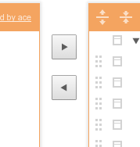
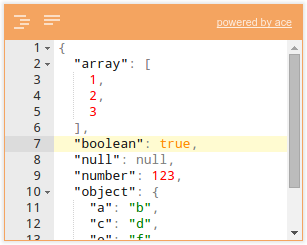
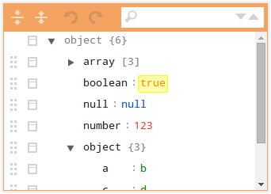
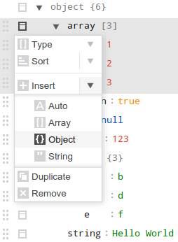

JSON在线编辑器帮助文档
简介
JSON编辑器在线是一个基于网络的工具来查看、编辑和格式JSON。 这说明你的数据并排在一个明确的、可编辑的TreeView和 代码编辑器。
支持的浏览器：Chrome，Firefox，Safari，Opera，Internet Explorer 8 +。
网址: http://coder.toys.
目录:
面板
该应用程序包含两个面板：左边的一个代码编辑器，右边的一个树编辑器。
两个面板之间有一个拆分器，允许更改 两个面板宽度根据个人的需要。 要将内容从一个面板复制到另一个面板，两个复制按钮 面板之间可以使用。
代码编辑器
代码编辑器在代码编辑器中显示的JSON数据。 编辑能够格式化，压缩，检查JSON。
代码编辑器的菜单包含以下按钮：
- 格式化. JSON数据格式，采用格式化使数据让其可读性更高。
- 压缩. 压缩的JSON数据，删除所有不必要的字节。例如：空格和回车
树编辑器
树编辑器是一个JSON数据的树形编辑器。编辑器使其对JSON更简单的创建，复制，删除区块，和编辑区块内的内容。
树编辑器的菜单包含以下功能：
- 展开全部.在编辑器中展开所有节点。
- 折叠全部. 在编辑器中折叠所有节点。
- 撤消. 撤销操作
- 重做. 重做最后一个动作。
- 搜索. 在树编辑器中搜索文本。 搜索结果将被高亮显示，并可以通过 反复按 Enter 或 Shift+Enter. 右侧搜索框两个按钮到下一个或 以前的搜索结果。
在编辑器中编辑输入字段的字段值。 该字段可以上下拖动使用 在区块的左面. 当一个字段是数组或对象的节点，也可以拖动水平将它移到数组或对象中。
从拖动区域的右边是一个按钮 打开 操作菜单. 这取决于类型的功能领域，以下是 可以在操作菜单：
- 类型. 改变字段的类型。选择:
- auto字段类型是自动确定的 该值可以是字符串、数字、布尔值或空值。
- object键/值对的无序集合。
- array有序集合的值。
- string 字段类型不是从值确定的， 但总是返回字符串。
- Sort. 数组或对象的节点的那种。 对于一个数组，对节点的值将排序。万一 一个对象，节点将被按键。 数组和对象可以按上升或下降进行排序。
- Insert. 在当前字段之前插入一个新字段。 可用的类型是自动（默认），对象，数组和字符串。
- Append. 在当前字段后插入一个新字段。 可用的类型是相同的插入动作。
- Duplicate重复的领域包括所有的子节点。
- Remove. 删除的字段包括所有的子节点。
快捷键
树编辑器支持所有可用操作的快捷键。 编辑可以使用的只是一个键盘。 下面的快捷键是可用的：
公共的
| Key | 描述 |
|---|---|
| Ctrl+> | 将代码从左面板复制到右面板，并将焦点移动到右面板上。 |
| Ctrl+< | 将代码从右面板复制到左面板，并将焦点移到左面板上。 |
树编辑器
| Key | 描述 |
|---|---|
| Alt+Arrows | 将插入符号的上/下/左/右区域之间 |
| Shift+Arrow Up/Down | 选择多个领域 |
| Shift+Alt+Arrows | 移动区上/下/左/右 |
| Ctrl+D | 复制区 |
| Ctrl+Del | 删除节点 |
| Ctrl+Ins | 插入类型自动插入一个新字段 |
| Ctrl+Shift+Ins | 添加类型自动添加一个新字段 |
| Ctrl+E | 折叠/展开节点 |
| Alt+End | 插入到最后一个节点 |
| Ctrl+F | 查找 |
| F3, Ctrl+G | 查找下一个 |
| Shift+F3, Ctrl+Shift+G | 查找上一个 |
| Alt+Home | 将插入符号的第一节点 |
| Ctrl+M | 显示操作菜单 |
| Ctrl+Z | 撤消操作 |
| Ctrl+Shift+Z | 重做 |
代码编辑器
这里描述的是编辑器的快捷键：
此外，还有快捷键来格式化/压缩代码：
| Key | 描述 |
|---|---|
| Ctrl+\ | 格式JSON数据 |
| Ctrl+Shift+\ | 压缩的JSON数据，删除所有空格 |